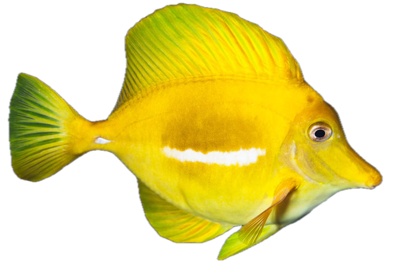
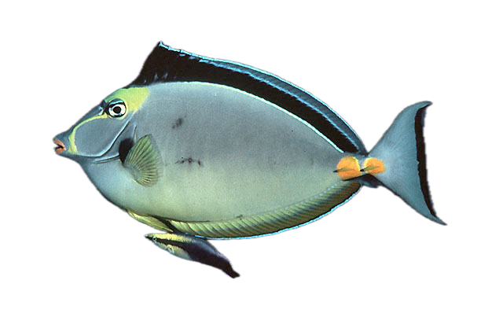

Demo 7 — Mapping Color Patterns onto a Phylogeny
EEB 187: Ecology and Evolution of Color
2026-05-20
How to read a coded species — three worked examples

Zebrasoma flavescens (yellow tang)
8 motifs active
CIP, WI, CP
H_1_color
Tr_1_color
Tr_2_v_strips_+
Ta_1_color
Ta_colored_scalpel
Mostly one color + scalpel. Minimal pattern.

Acanthurus lineatus (lined surgeonfish)
13 motifs active
CIP, WI, CP
H_2_colors_+, H_2_h_strips_+
H_2_o_strips_+, H_1_stain
Tr_2_colors_+, Tr_2_h_strips_+
Ta_2_color_+, Ta_2_strips_h_+
Ta_2_strips_v_+, Ta_border_fin
Striped, colorful — the “stripe signature” is 2_h_strips_+ on head + trunk + tail.

Naso lituratus (orange-spine unicornfish)
18 motifs active (most complex)
H_2_colors_+, H_colorful_mouth
H_2_o_strips_+, H_2_stains_+
H_h_strip_eye, H_marbling
H_edge_operculum, Tr_marbling
Ta_colored_scalpel, Ta_stain_scalpel
…plus 8 more
Ornate face (marbling + colorful mouth) + colored scalpel + saddle. Maximally encoded.
Pattern complexity = rowSums(motifs) per species — the headline number you’ll map onto the tree today.